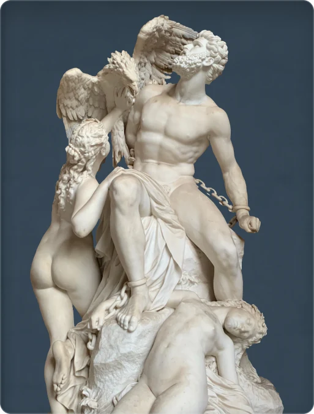

Prométhée

Les Océanides entourent le Titan enchaîné
Prométhée est enchaîné au rocher, entouré des Océanides. L’aigle et les liens rendent sa captivité visible, tandis que les figures qui l’entourent partagent sa douleur. Eduard Müller conçoit le groupe en 1868. Commandée en 1872, sa version monumentale en marbre est installée à la Nationalgalerie de Berlin en 1879. Il s’agit d’une création du XIXe siècle inspirée du mythe grec.
Eduard Müller · 1872–1879 · marbre · Alte Nationalgalerie, Berlin
Archives de la Nationalgalerie · I/NG 1812 (PDF) ↗
Crédit photographique
Photo : Montserrat Mondragón / Pexels
Le corps bute contre les liens
Le torse de Prométhée se redresse au-dessus du rocher, une jambe repliée, la tête basculée vers le haut. Sur le côté, le bras s’éloigne du corps jusqu’au poignet entouré d’un anneau. Des maillons apparaissent derrière le poignet. Cherchez aussi le lien près de la cheville. Le regard passe ainsi d’un membre qui semble prêt à bouger au point qui l’attache. La captivité se comprend dans ces détails avant même que l’on reconnaisse le personnage.
L’aigle et les Océanides
Une aile ouverte occupe le haut du groupe, à proximité de la tête renversée. Plus bas, une Océanide se rapproche du genou levé et pose la main sur le drapé. Une autre incline la tête près de la base du rocher. Le regard circule entre ces figures, de la proximité menaçante de l’aigle vers les attitudes des Océanides. La main posée et la tête abaissée donnent à lire des manières différentes de partager la douleur du Titan.
Des reliefs dans un même marbre
Sur le torse de Prométhée, la lumière suit la courbe des muscles. Autour de lui, elle accroche les bords des plumes, les plis de l’étoffe et les aspérités du rocher. Reprenez le trajet d’un détail à l’autre. Les formes du corps se détachent des surfaces plus irrégulières qui les encadrent. Le drapé relie le genou aux figures du bas. Les ombres entre les plumes et entre les maillons rendent lisibles, dans la photographie, les contours de l’aigle et de la chaîne.
Un mythe repris au XIXe siècle
Le personnage appartient au mythe grec. Le groupe en marbre appartient, lui, à l’œuvre d’Eduard Müller et peut être situé au XIXe siècle grâce aux dates de la notice. Müller choisit de réunir dans le même groupe le prisonnier, l’aigle et les figures qui assistent à sa souffrance. Observer la place accordée à chacun aide à comprendre sa lecture de l’épisode. Les dates de la commande et de l’installation aident à suivre la réalisation de cette version monumentale du groupe.